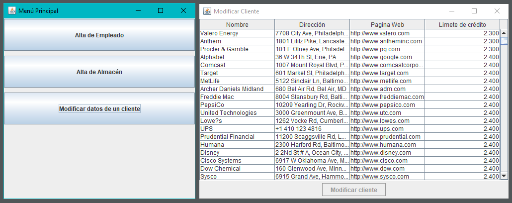
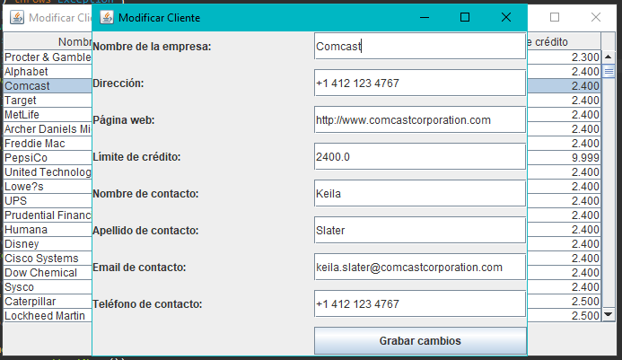
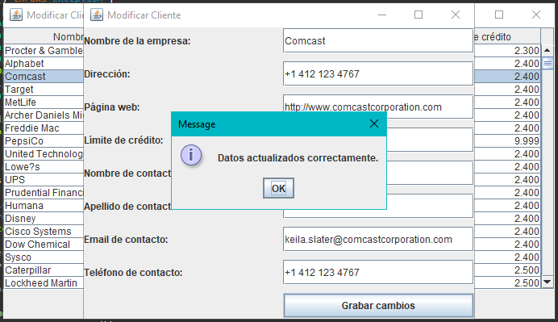

⬅ Volver al índice
Ver siguiente ejercicio ➡️
Ejercicio 3 - Modificar Cliente
📌 ¿Para qué sirve?
Este apartado permite consultar todos los clientes registrados y modificar
sus datos de forma sencilla, incluyendo también los datos del contacto
asociado a cada cliente.
🧭 ¿Cómo se utiliza?
-
Desde la ventana principal, se hace clic en el botón "Modificar
cliente".
- Se abre una tabla con todos los clientes registrados.
- Selecciona un cliente de la tabla.
- Haz clic en el botón "Modificar cliente".
-
Se abrirá una nueva ventana con los datos actuales del cliente y su
contacto.
- Edita los datos que desees y pulsa el botón "Grabar cambios".

🧾 ¿Qué datos puedes modificar?
-
Datos del cliente: Nombre de empresa, dirección, web y
límite de crédito.
-
Datos del contacto: Nombre, apellidos, email y teléfono
del contacto asociado.

✅ ¿Qué pasa al guardar?
Si todos los campos están correctamente rellenados, el sistema guarda los
cambios en la base de datos y muestra un mensaje de confirmación. Después
se cierra la ventana.

⚠️ ¿Qué pasa si falta algún dato?
Si no has rellenado todos los campos, el sistema te mostrará un mensaje
indicando que es necesario completar todos los datos antes de continuar.

🎯 Resultado final
Con esta funcionalidad puedes mantener actualizados los datos de los
clientes de forma fácil. Es ideal para corregir errores o actualizar la
información de contacto.